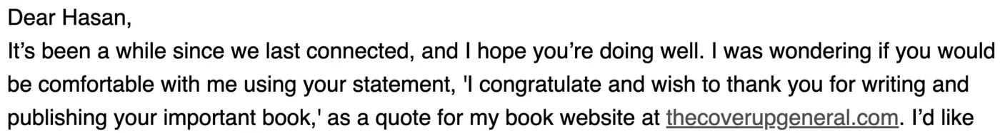
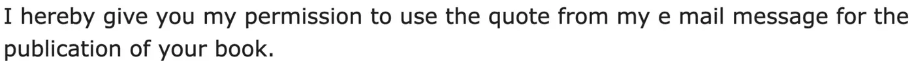

Preuve · Courriel
Hasan Nuhanović à Giltay, 27 juin 2025
La citation figure dans la demande de l’auteur du 24 juin 2025, au bas de l’échange ; l’autorisation, dans la réponse de Hasan Nuhanović du 27 juin, au-dessus.
La citation, dans la demande du 24 juin 2025
« Je me demandais si tu serais d’accord pour que j’utilise ta déclaration, “Je te félicite et tiens à te remercier d’avoir écrit et publié ton livre important”, comme citation sur le site web de mon livre, thecoverupgeneral.com. » Page 1, la demande de l’auteur du 24 juin 2025, au bas de l’échange. Les mots entre les guillemets intérieurs proviennent d’un courriel antérieur de Hasan Nuhanović, comme le confirme sa réponse. Traduit de l’anglais ; le texte original figure ci-dessous.
“I was wondering if you would be comfortable with me using your statement, ‘I congratulate and wish to thank you for writing and publishing your important book,’ as a quote for my book website at thecoverupgeneral.com.” Texte original

L’autorisation, 27 juin 2025
« Par la présente, je te donne mon autorisation d’utiliser la citation tirée de mon courriel pour la publication de ton livre. » Page 1, le texte de la réponse, juste sous la formule d’appel. Dans le message lui-même, « e mail » est écrit en deux mots. Traduit de l’anglais ; le texte original figure ci-dessous.
“I hereby give you my permission to use the quote from my e mail message for the publication of your book.” Texte original

Pourquoi ce document compte
La section des voix contient des félicitations de Hasan Nuhanović, qui a survécu au génocide de Srebrenica et a écrit Under the UN Flag (en néerlandais De tolk van Srebrenica). Ce courriel est le document sur lequel repose cette citation. Trois jours plus tôt, Giltay lui avait demandé, en citant la phrase mot pour mot, s’il pouvait la publier avec une petite photo sur le site web de son livre et l’attribuer à Nuhanović. Voici la réponse : autorisation accordée, avec ses meilleurs vœux pour le livre. Les éloges figurant sur ce site web sont donc ceux de Nuhanović lui-même, utilisés avec son accord écrit.
Provenance
- Document
- Courriel, une page, capture d’écran du compte Gmail du destinataire
- Expéditeur
- Hasan Nuhanović, survivant du génocide de Srebrenica et auteur de Under the UN Flag. L’en-tête indique son nom d’affichage sans signe diacritique, sous la forme « Hasan Nuhanovic », et son adresse est caviardée dans ce PDF
- Destinataire
- Edwin Giltay. L’en-tête indique « aan mij » (à moi), car la capture d’écran a été faite depuis la messagerie de Giltay lui-même
- Date
- Vendredi 27 juin 2025, 14:17
- Objet
- « Re: Congratulations for the book » (Félicitations pour le livre)
- En réponse à
- Message d’Edwin Giltay du mardi 24 juin 2025, 11:17:26 GMT+2, heure néerlandaise, cité intégralement sous la réponse
- Références
- La déclaration que Giltay souhaitait citer, le site web de son livre, thecoverupgeneral.com, la petite photo qu’il souhaitait placer à côté de la citation, et l’attribution « Hasan Nuhanović, survivor of the Srebrenica genocide and author of Under the UN Flag »
- Langue
- Anglais, dans une interface Gmail en néerlandais
- Conservé par
- Edwin Giltay, le destinataire
- Source
- Capture d’écran sur dedoofpotgeneraal.
nl/ doc/ nuhanovic.pdf
Cité dans : la section des voix.
Fiche de preuve : https://
Document : https://
Dernière modification le 13 septembre 2026, consulté le 3 octobre 2026.

Cette page est une fiche de preuve du livre Le Général de dissimulation d’Edwin Giltay et du site web qui l’accompagne.